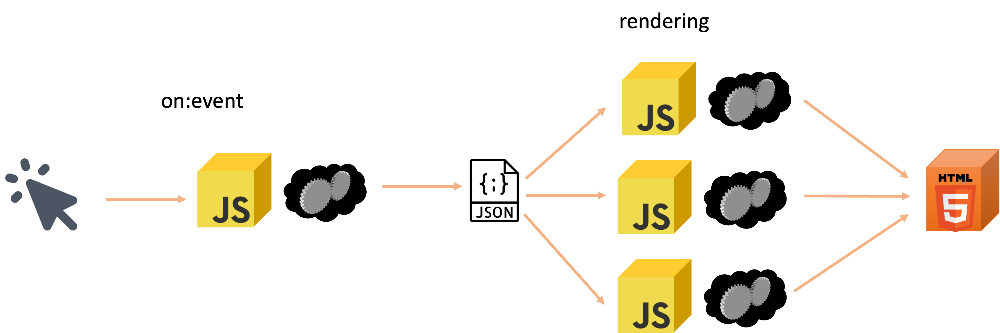
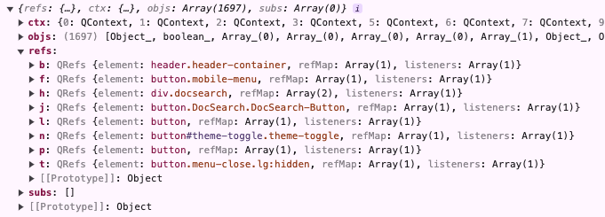

Qwik
Qwik niveau 1
Pré-requis minimums
- Node.js 18+
- NPM v10.7.0+
- Git
Création de l'application power ranger
TP
- Création d'une application qwik "power-rangers-app"
- `npm create qwik@latest`
- Nom : power-rangers-app
- Starte : Empty App (Qwik City + Qwik)
- Installation des dependences : oui
- Initialisation du git : non
- cd power-rangers-app
- npm run start
Structure du projet
power-rangers-app
├─ README.md
├─ package.json
├─ public
└─ src
├─ components
├─ entry.ssr.tsx
├─ global.css
├─ root.tsx
└─ routes
├─ index.tsx
└─ layout.tsx
Composant et évènements
export default component$<PropsType>((props) => {
const do = $(()=>...);
return <button onClick$={()=>do()}>Clique la<button/>
})
TP
- Nettoyer la page `index.tsx`
- Créer un composant hello-world.tsx dans le dossier components et l'appeler dans ...src/routes/index.tsx
- Passer un `props` pour variabiliser le `world` selon le composant parent (ne pas oublier le typage)
- Ajouter un bouton avec un évènement onClick$ pour faire un console.log dans une méthode $
- 👀Inspecter le navigateur👀
- Live coding
Rendu avec des conditions, des listes et du binding
- if/else, ternaire et &&
- map et key
- Binding attribute
{if(...){}else{}}
{condition ? ... : ...}
{condition && ...}
{[].map(()=>...)}
$<input bind:value={...} >
TP
- Importer SAGA_POWER_RANGERS
- Créer un composant power-ranger-list.tsx
- Faire apparaitre le nom des power rangers avec une boucle `map`
- Utiliser les balises ul li
- Ajout d'une condition d'affichage selon la couleur d'un power ranger
- Modification du filtre couleur avec un input `bind`
- Petit aide !!!
- Live coding
Signal et Store
const ... = useSignal<...>(...);
const ... = useStore<...>(..., { deep: boolean });
TP
- Créer un composant dream-team.txs, l'appeler dans power-ranger-list
- Le composant DreamTeam a en props theSelection de type string
- Créer un useSignal theSelection de type string dans PowerRangerList
- Ajouter dans theSelection le nom du power ranger via un bouton, onClick$
Suite du TP
- Changer theSelection par une liste de string pour en avoir plusieurs
- Utiliser les balises ul li
- 👀Inspecter le navigateur👀
- Live coding
CSS modules et CSS global
Le CSS global est utilisé pour les styles qui doivent être appliqués sur tout le site
Le CSS module est utilisé pour les styles qui doivent être appliqués sur un composant
Slot
// Composant bouton.tsx
export default component$(() => {
return (
<>
<Slot/>
</>
);
});
// Utilisation dans un aure composant
<Bouton>
<p>Clique ici</p>
</Bouton>
import style from './MyComponent.css?inline';
useStyles$(style);
useStylesScoped$(style);
TP
- Création d'un fichier style.css
- Personnaliser la balise ul avec `list-style-type` et la méthode useStyles$ dans PowerRangerList
- Remplacer par useStyles$ par useStylesScoped$
- 👀Inspecter le navigateur👀
- Live coding
Et les tests
test(`[ExampleTest Component]: Should render`, async () => {
const { screen, render } = await createDOM();
await render(<ExampleComponent />);
expect(screen.outerHTML).toContain(...);
});
TP
- Installer de l'adapter vitest `npm run qwik add vitest`
- Ecrire un test pour PowerRangerDreamTeam
- Live coding
Qwik niveau 2
Contextes
// Au dessus du composant parent
export const contextId = createContextId<Signal<...>>(...);
// Dans le composant parent
useContextProvider(contextId, ...);
// Dans les composants enfants
const ... = useContext(contextId);
TP
- Supprimer le props theSelection dans DreamTeam
- Modification PowerRangerList pour utiliser un context
- Récupération dans DreamTeam
- Live coding
Qwik City - routing
src/
└── routes/
├── about/
│ └── index.tsx # https://example.com/about
├── details/
│ └── [id]/
│ └── index.tsx # https://example.com/docs/1234
├── [...catchall]/
│ └── index.tsx # https://example.com/anything/else
└── layout.tsx # layout par défaut pour tous les pages
TP
- Création d'une page `Mon power ranger`
- Accéder directement via l'url
Pour récupération de la donnée passé dans l'url
import { useLocation } from '@builder.io/qwik-city';
// Dans le composant
const routeLocation = useLocation();
/*
routeLocation.params[...]
routeLocation.isNavigation
routeLocation.prevUrl
routeLocation.url
*/
TP
- Création d'une page dynamique `detail` avec l'id d'une saga
- Récupérer la donnée avec SAGA_POWER_RANGERS
- Accéder directement via l'url
Qwik City - Navigation SPA/MPA
<Link href="">
...
</Link>
TP
- Utilisation du composant `Link` pour aller sur la page `detail/[id]`
- 👀Inspecter le navigateur👀
- Live coding
Navigation MPA ou SPA 🧐
Évènement de navigation bizarre
Live coding
Qwik City - DocumentHead
// En dehors du composant
export const ... = routeLoader$(async (requestEvent) => {
return requestEvent.params...;
});
export const head: DocumentHead = ({resolveValue, params}) => {
const ... = resolveValue(...);
return {
title: ...,
};
};
TP
- Variabiliser le `title` selon le nom dans page détails d'un power rangers
- Live coding
Qwik City - routeLoaders$
// Au dessus du composant
export const useData = routeLoader$(async (requestEvent) => {
const res = await fetch(...);
const data = await res.json();
return data as ...;
});
// Dans le composant
const signal = useData();
TP
- Démarage du backend `node server.mjs`
- Modifier le code pour récupération les données avec routeLoader$ sur http://localhost:8080/
- Live coding
Qwik City - useResource$
// Dans le composant
const resource = useResource$<...>(
async ({ track, cleanup }) => {
track(() => ...);
cleanup(() => ...);
const resp = await fetch(...);
const json = (await resp.json()) as ...;
return json;
}
Qwik City - Resources
<Resource
value={resource}
onPending={()=> <>Loading...</>}
onRejected={()=> <>Erreur...</>}
onResolved={(data) => {
return <>OK...</>;
}}
>
TP
- Utilisation du composant Ressource avec le backend
- Live coding
Qwik City - formulaire avec Modular Form
import { $, component$, type QRL } from '@builder.io/qwik';
import { routeLoader$ } from '@builder.io/qwik-city';
import type { InitialValues, SubmitHandler } from '@modular-forms/qwik';
import { formAction$, useForm, valiForm$ } from '@modular-forms/qwik';
import * as v from 'valibot';
const LoginSchema = v.object({
email: v.pipe(
v.string(),
v.nonEmpty('Please enter your email.'),
v.email('The email address is badly formatted.'),
)
});
type LoginForm = v.InferInput<typeof LoginSchema>;
export const useFormLoader = routeLoader$<InitialValues<LoginForm>>(() => ({
email: '',
}));
export const useFormAction = formAction$<LoginForm>((values) => {
// Runs on server
}, valiForm$(LoginSchema));
export default component$(() => {
const [loginForm, { Form, Field }] = useForm<LoginForm>({
loader: useFormLoader(),
action: useFormAction(),
validate: valiForm$(LoginSchema),
});
const handleSubmit: QRL<SubmitHandler<LoginForm>> = $((values, event) => {
// Runs on client
console.log(values);
});
return (
<Form onSubmit$={handleSubmit}>
<Field name="email">
{(field, props) => (
<div>
<input {...props} type="email" value={field.value} />
{field.error && <div>{field.error}</div>}
</div>
)}
</Field>
<button type="submit">Login</button>
</Form>
);
});
TP
- Non, je blague
Les atouts de Qwik
Pourquoi est-il aussi mé... euh cool
Performance Web
... et empreinte carbone
Les types de rendu web
|
Statique |
Interactivité FMP TTI |
|
|
Généré |
Interactivité FMP TTI |
|
|
CSR |
Interactivité FMP TTI |
|
|
SSR / (Partial) Hydratation |
Interactivité FMP TTI |
|
|
SSR (Resumability) ( |
Interactivité FMP TTI |
 )
)Empreinte et performace
1 Mo envoyé = 15 g de CO2 (et c'est déjà un début)
Attention (activité backend, optimisations: caches, génération statique, ...)
Résumabilité
Relancer la navigation en exécutant le minimum de choses
Télécharger le moins de choses possible
... tout en gardant une réactivité accrue
QwikLoader
1kB de Javascript
uniquement des handlers généraux
... uniquement ceux nécessaires
Comment ça marche ?
Le nécessaire
- Etat minimisé
- Dépendances entre fragments
- Références aux interactions/render
- JS nécessaire (useVisibleTask$, ...)
État minimisé
Lisible avec Qwik Devtools
import("https://qwik.dev/devtools/json/");

et dans le html...
TP
- Regarder le lazy loading sur son appli
- Regarder les js générés et comment c'est articulé
Lazy Lazy loading
Un composant Qwik
... et sa version "compilée"
//app.js
import { componentQrl, qrl } from '@builder.io/qwik';
const App = /*#__PURE__*/ componentQrl(
qrl(() => import('./app_component_akbu84a8zes.js'), 'App_component_AkbU84a8zes')
);
export { App };
// app_component_akbu84a8zes.js
import { jsx as _jsx } from '@builder.io/qwik/jsx-runtime';
import { qrl } from '@builder.io/qwik';
export const App_component_AkbU84a8zes = () => {
console.log('render');
return /*#__PURE__*/ _jsx('p', {
onClick$: qrl(
() => import('./app_component_p_onclick_01pegc10cpw'),
'App_component_p_onClick_01pEgC10cpw'
),
children: 'Hello Qwik',
});
};
// app_component_p_onclick_01pegc10cpw.js
export const App_component_p_onClick_01pEgC10cpw = () => console.log('hello');
Not all valid JavaScript code is valid code for the Optimizer.
Not all valid JavaScript code is valid code for the Optimizer.
Not all valid JavaScript code is valid code for the Optimizer.
Dès le début ?
useOn, useOnDocument, useOnWindow
useTask$
useVisibleTask$
TP
- Ajouter un affichage de la position de la souris sur la page (coordonnées X, Y)
- Faire une version spéciale en utilisant un paramètre de l'url
- Rendre les TODO qui sont trop longs pour qu'ils défilent sur place
- Permettre de stopper/reprendre le défilement
Qwik Backend
Tout au même endroit
routeActions$ / globalActions$
- Fonctions serveur appelées explicitement
- Avec side-effect (BDD, email, submit...)
- Retourne de la donnée au client
Avec un form
import { component$ } from '@builder.io/qwik';
import { routeAction$, Form } from '@builder.io/qwik-city';
export const useAddUser = routeAction$(async (data, requestEvent) => {
// This will only run on the server when the user submits the form (or when the action is called programmatically)
const userID = await db.users.add({
firstName: data.firstName,
lastName: data.lastName,
});
return {
success: true,
userID,
};
});
export default component$(() => {
const action = useAddUser();
return (
<>
{action.value?.success && (
// When the action is done successfully, the `action.value` property will contain the return value of the action
User {action.value.userID} added successfully
)}
);
});
Programmatiquement
import { component$ } from '@builder.io/qwik';
import { routeAction$, Form } from '@builder.io/qwik-city';
export const useAddUser = routeAction$(async (data, requestEvent) => {
// This will only run on the server when the user submits the form (or when the action is called programmatically)
const userID = await db.users.add({
firstName: data.firstName,
lastName: data.lastName,
});
return {
success: true,
userID,
};
});
export default component$(() => {
const action = useAddUser();
return (
{action.value?.success && User added successfully
}
);
});
Validation de formulaires
export const useAddUser = routeAction$(
async (user) => {
// The "user" is strongly typed: { firstName: string, lastName: string }
const userID = await db.users.add({
firstName: user.firstName,
lastName: user.lastName,
});
return {
success: true,
userID,
};
},
// Zod schema is used to validate that the FormData includes "firstName" and "lastName"
zod$({
firstName: z.string(),
lastName: z.string(),
})
);
Accès à la request
export const useProductRecommendations = routeAction$(
async (_data, requestEvent) => {
console.log('Request headers:', requestEvent.request.headers);
console.log('Request cookies:', requestEvent.cookie);
console.log('Request url:', requestEvent.url);
console.log('Request params:', requestEvent.params);
console.log('MY_ENV_VAR:', requestEvent.env.get('MY_ENV_VAR'));
}
);
Gestion des erreurs
export const useAddUser = routeAction$(
async (user, { fail }) => {
// `user` is typed { name: string }
const userID = await db.users.add(user);
if (!userID) {
return fail(500, { message: 'User could not be added' });
}
return { userID };
},
zod$({
name: z.string(),
})
);
export default component$(() => {
const action = useAddUser();
return (
);
});
Précédentes valeurs
export const useAddUser = routeAction$(
// handle action...
);
export default component$(() => {
const action = useAddUser();
return (
);
});
Route vs Global ?
- `routeAction$()` uniquement dans le dossier `src/routes`
- Uniquement sur les routes où elle est déclarée
- Doit être exportée
- `globalAction$()` partout dans le dossier `src`
TP
- Faire en sorte de sauvegarder le contenu de notre robot dans un fichier écrit dans un répertoire (temporaire)
Middlewares
Exemple
import type { RequestHandler } from '@builder.io/qwik-city';
export const onRequest: RequestHandler = async ({next, url}) => {
console.log('Before request', url);
await next();
console.log('After request', url);
};
Spécifique à une méthode
// Called only with a specific HTTP method
export const onGet: RequestHandler = async (requestEvent) => { ... }
export const onPost: RequestHandler = async (requestEvent) => { ... }
export const onPut: RequestHandler = async (requestEvent) => { ... }
export const onPatch: RequestHandler = async (requestEvent) => { ... }
export const onDelete: RequestHandler = async (requestEvent) => { ... }
Ordre d'invocation
src/
└── routes/
├── layout.tsx # Invocation order: 1 (first)
└── api/
├── layout.tsx # Invocation order: 2
└── greet/
└── index.ts # Invocation order: 3 (last)
RequestEvent
import { type RequestHandler } from '@builder.io/qwik-city';
// Generic function `onRequest` is executed first
export const onRequest: RequestHandler = async ({ next, sharedMap, json }) => {
const log: string[] = [];
sharedMap.set('log', log);
log.push('onRequest start');
await next(); // Execute next middleware function (onGet)
log.push('onRequest end');
json(200, log);
};
TP
- Logger tous les appels faits sur l'API
- Si tu t'ennuies: Rediriger si non authentifié sur certaines routes (non corrigé)
Endpoints
import { type RequestHandler } from '@builder.io/qwik-city';
export const onGet: RequestHandler = async ({ json }) => {
json(200, { hello: 'world' });
};
Répondre progressivement
export const onGet: RequestHandler = async (requestEvent) => {
const writableStream = requestEvent.getWritableStream();
const writer = writableStream.getWriter();
const encoder = new TextEncoder();
writer.write(encoder.encode('Hello World\n'));
await wait(100);
writer.write(encoder.encode('After 100ms\n'));
await wait(100);
writer.write(encoder.encode('After 200ms\n'));
await wait(100);
writer.write(encoder.encode('END'));
writer.close();
};
const wait = (ms: number) => new Promise((resolve) => setTimeout(resolve, ms));
server$
TP
- Retourner la liste des power rangers pour afficher sur une page
- Le faire progressivement apparaître toutes les 1s
validator$
export const useAction = routeAction$(
async (data, requestEvent: RequestEventAction) => {
return { foo: "bar" };
},
zod$(/*...*/),
validator$(/*...*/),
validator$(async (ev: RequestEvent, data) => {
if (ev.query.get("secret") === "123") {
return { success: true, data: "cool" };
}
return {
success: false,
error: {
message: "secret is not correct",
secret: ev.query.get("secret"),
status: 404
},
};
}),
);
TP
- Valider que toutes les parties du robot sont bien combinées pour pouvoir le sauvegarder dans le fichier
Quiz
Quel est le concept-clé de Qwik ?
La Résumabilité
Quel est son pricipal avantage ?
Il est plus puissant
Il est plus fainéant
Il est plus intelligent
Ce code est-il valide ?
Oui
Non
Ce code est-il valide ?
Oui
Non
Mais ce n'est pas intelligent pour autant
Ce code peut-il être exécuté ?
Côté client
Côté serveur
Les 2
Ce code peut-il être exécuté ?
Côté client
Côté serveur
Les 2
Ce code peut-il être exécuté ?
Côté client
Côté serveur
Les 2
Bonus stage
Image Optimisation
Optimisation automatique et poussée des images
DevTools
Mécanisme pour éjecter les scripts tiers du temps de chargement de la page sans pour autant les supprimer entièrement
Description du résultat
- objs: Les objects du système qui ont été sérialisés
- ctx: Un ensemble d'objets QContext.
- refs: un esemble d'objets QRef.
- sub: un ensemble d'objets QSubscription.
TP
- Regarder l'état minimisé de votre application
Qwik-React
Migrer depuis une application React sans tout réécrire dès le début
Existe aussi pour:
Attention à la maturité
Integrations
Power-ups
- Auth.js
- i18n ($localize ou qwik-speak)
- Storybook, Tailwind, Leaflet...
Deployments
Easy mode
- Node
- Static Site
- Google Cloud Run, Deno, Bun, AWS, Firebase, ...
Partytown
Mécanisme pour éjecter les scripts tiers du temps de chargement de la page sans pour autant les supprimer entièrement